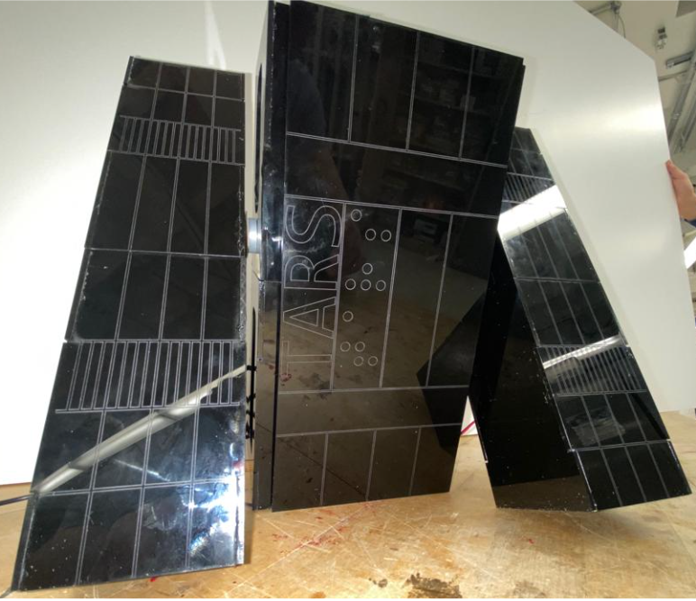

TARS Walking Robot

I partnered with a teammate to collaboratively design, build, program, and test a bipedal walking robot. Leveraging our combined expertise, we harnessed the power of Python and Raspberry Pi to program and develop the functional aspects of this autonomous robot. In our pursuit of optimization, we conducted motion simulations using Solidworks Motion to refine the functionality of the assembly, ensuring its smooth and precise movements. Subsequently, we presented our robot to our professor, who provided valuable feedback, and also received insightful critiques from our classmates on ways to enhance the robot's versatility and performance.
TARS Walking Robot Concept Sketches and CAD